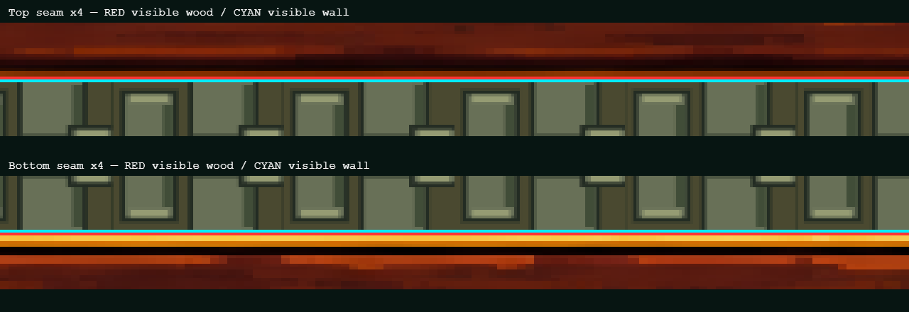
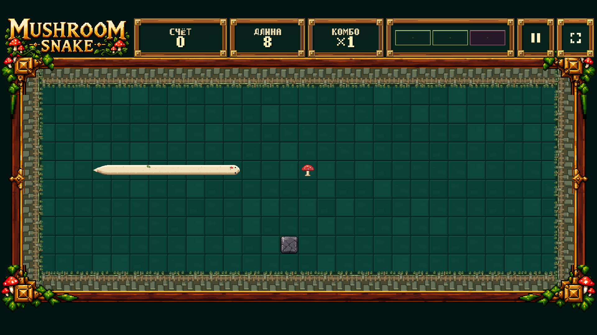
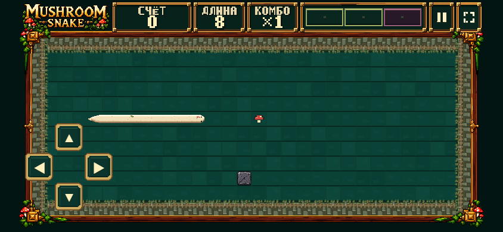

Gate 2.3.2 — visible seam review
RED: actual visible wood. CYAN: actual visible wall. No deployment. Awaiting human review.
Top / bottom ×4

Desktop native 1920×1080

Mobile native 844×390

Measurements and tests · Final metrics